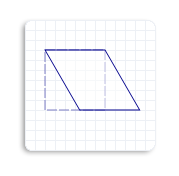
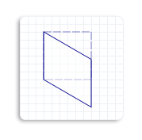
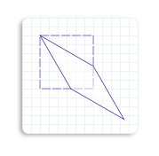

To skew (or shear) an object means to distort an object by a specified angle from the x-axis, the y-axis, or both. For example, when you skew a square, it becomes a parallelogram.
The Matrix3x2F::Skew method takes 3 parameters:
To predict the effect of a skew transformation, consider that angleX is the skew angle measured in degrees counterclockwise from the y-axis. For example, if angleX is set to 30, the object skews 30 degrees counterclockwise along the y-axis about the centerPoint. The following illustration shows a square skewed horizontally 30 degrees about the upper-left corner of the square.

Similarly, angleY is a skew angle measured in degrees clockwise from the x-axis. For example, if angleY is set to 30, the object skews 30 degrees clockwise along the x-axis about the centerPoint. The following illustration shows a square skewed vertically 30 degrees about the upper-left corner of the square.

If you set both angleX and angleY to 30 degrees, and the centerPoint to the upper-left corner of the square, you will see the following skewed square (solid outlined). Notice that the skewed square is skewed 30 degrees counterclockwise from the y-axis and 30 degrees clockwise from the x-axis.

The following code example skews the square 45 degrees horizontally about the upper-left corner of the square.
// Create a rectangle.
D2D1_RECT_F rectangle = D2D1::Rect(126.0f, 301.5f, 186.0f, 361.5f);
// Draw the outline of the rectangle.
m_pRenderTarget->DrawRectangle(
rectangle,
m_pOriginalShapeBrush,
1.0f,
m_pStrokeStyleDash
);
// Apply the skew transform to the render target.
m_pRenderTarget->SetTransform(
D2D1::Matrix3x2F::Skew(
45.0f,
0.0f,
D2D1::Point2F(126.0f, 301.5f))
);
// Paint the interior of the rectangle.
m_pRenderTarget->FillRectangle(rectangle, m_pFillBrush);
// Draw the outline of the rectangle.
m_pRenderTarget->DrawRectangle(rectangle, m_pTransformedShapeBrush);
The following illustration shows the effect of applying the skew transformation to the square, where the original square is a dotted outline and the skewed object (parallelogram) is a solid outline. Notice that the skew angle is 45 degrees counterclockwise from the y-axis.
Â
Â